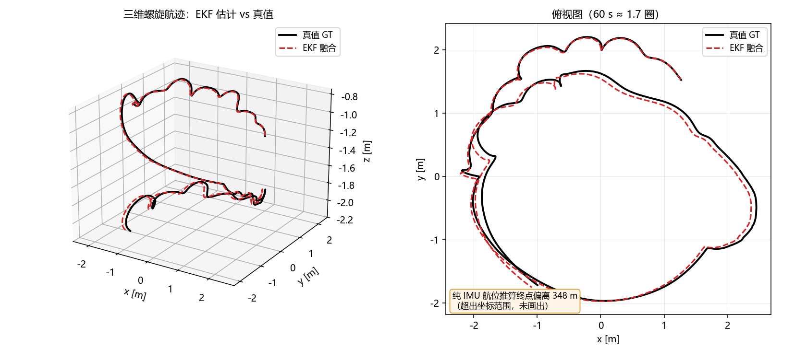
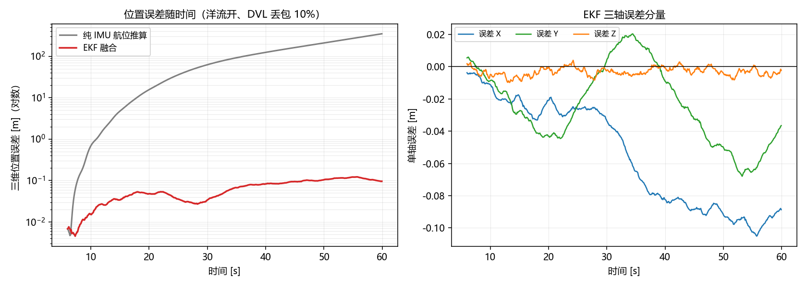
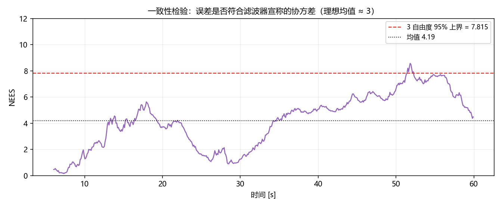
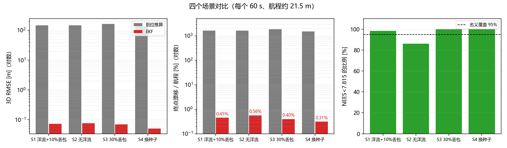

水下多源融合组合导航（EKF）
在 MuJoCo 水下机器人仿真上，用 15 状态误差状态卡尔曼滤波（ESKF）融合 IMU、DVL、深度计与姿态量测，输出连续、带协方差的位姿估计，并与纯 IMU 航位推算做量化对比。

1. 为什么需要它
仓库里已有的 rov_mujoco 直接发布仿真真值 /rov/odom，
autonomous_navigation_node 与 sonar_slam_node 都拿它当定位输入。
真实 ROV 没有"真值"：只有带零偏的 IMU、带噪声的深度计、会丢包的 DVL。
纯 IMU 积分会随时间平方发散——本模块的基线实验里，60 s 航程 21.5 m，
航位推算终点偏差达到 348 m。
2. 文件结构
新增与修改的文件都集中在 rov_mujoco 包内，不新建功能包：
src/water/rov_mujoco/
├── rov_mujoco/
│ ├── ekf_fusion.py # 15 状态 ESKF + 航位推算基线 + 传感器噪声模型（纯 numpy）
│ ├── sensor_sim_node.py # 由真值合成 IMU / DVL / 深度 / 姿态（零偏、噪声、丢包）
│ ├── ekf_node.py # 融合节点：/rov/odom_fused、/rov/odom_deadreckoning
│ └── mujoco_sim_node.py # [修改] 改用仿真时间打戳，新增 /clock 发布
├── launch/
│ └── ekf_nav.launch.py # 仿真 + 噪声传感器 + EKF 一键启动
├── test/
│ └── test_ekf.py # 无头自动评测：RMSE / 漂移 / NEES
└── setup.py # [修改] 新增 sensor_sim_node、ekf_nav_node 入口
docs/
├── water/rov_ekf_navigation.md # 本文档
└── img/water/ekf_*.png # 4 张实测图
mkdocs.yml # [修改] 「水域载具」下新增一行导航
数据流：
MuJoCo 仿真 ──/rov/odom(真值)──> 传感器噪声仿真 ──┬── /rov/imu_noisy ──┐
├── /rov/dvl ────────┤
└── /rov/depth_noisy ┤
v
EKF 节点
│
┌────────────────────────────┴─────────────────┐
v v
/rov/odom_fused /rov/odom_deadreckoning
（含位姿协方差） （纯 IMU 基线）
3. 算法
3.1 状态定义
标称状态：位置 $\mathbf p$、速度 $\mathbf v$、姿态四元数 $\mathbf q$、 加速度计零偏 $\mathbf b_a$、陀螺零偏 $\mathbf b_g$。
误差状态（15 维）：
3.2 预测（IMU）
误差状态转移矩阵（关键块）：
过程噪声按加速度/陀螺噪声谱密度与零偏随机游走注入。
3.3 量测更新
| 量测 | 模型 | 维度 |
|---|---|---|
| DVL | $\mathbf v_b = \mathbf R^\top\mathbf v$ | 3 |
| 深度计 | $d = -p_z$（向下为正） | 1 |
| 姿态（AHRS/罗经） | $\delta\boldsymbol\theta = 2\,\mathrm{vec}(\mathbf q^{-1}\otimes\mathbf q_m)$ | 3 |
每次更新用 Joseph 形式保持协方差正定，误差注入标称状态后清零。
4. 传感器噪声模型
sensor_sim_node 从仿真真值合成带误差的传感器，参数可在 launch 中调整：
| 传感器 | 噪声 | 零偏 | 其它 |
|---|---|---|---|
| IMU 加速度 | σ = 0.05 m/s² | 0.05 m/s²（随机游走） | 50 Hz |
| IMU 陀螺 | σ = 0.005 rad/s | 0.003 rad/s | 50 Hz |
| DVL | σ = 0.01 m/s | 0.005 m/s | 默认 10% 丢包 |
| 深度计 | σ = 0.02 m | — | — |
| 姿态 | σ = 0.01 rad | — | — |
5. ROS 2 接口
| 话题 | 类型 | 方向 |
|---|---|---|
/rov/imu_noisy |
sensor_msgs/Imu |
输入 |
/rov/dvl |
geometry_msgs/TwistStamped |
输入（机体系速度） |
/rov/depth_noisy |
std_msgs/Float64 |
输入 |
/rov/odom_fused |
nav_msgs/Odometry |
输出（含位姿协方差） |
/rov/odom_deadreckoning |
nav_msgs/Odometry |
输出（IMU 基线） |
/rov/ekf/position_std |
std_msgs/Float64MultiArray |
输出（位置标准差） |
/rov/ground_truth |
nav_msgs/Odometry |
输出（真值，评测用） |
参数：init_delay（传感器上线后等待多久再初始化滤波器，默认 0.1 s）、
sigma_acc/sigma_gyro/sigma_dvl/sigma_depth/sigma_att（滤波器噪声）。
6. 运行
cd ~/ros2_ws
colcon build --packages-select rov_mujoco --symlink-install
source install/setup.bash
# 仿真 + 噪声传感器 + EKF
ros2 launch rov_mujoco ekf_nav.launch.py
# 只看融合结果
ros2 topic echo /rov/odom_fused --once
# 自动化评测（无头，60 s 仿真）
python3 src/water/rov_mujoco/test/test_ekf.py --duration 60 --out /tmp/ekf_eval.json
常用参数：--dropout 0.3（DVL 丢包率）、--current 0（关闭洋流）、
--seed 11（换随机种子）、--facc/--fgyro/--fdvl/--fdepth（滤波器噪声）。
7. 实验结果
每个场景 60 s、约 1.7 圈三维螺旋航迹（航程 21.4–21.5 m）， 起点前 6 s 为控制器预热，EKF 从 6 s 起初始化。
| 场景 | 航程 [m] | 航位推算 RMSE [m] | EKF RMSE [m] | EKF 终点误差 [m] | EKF 漂移率 | NEES 均值 | NEES 覆盖率 |
|---|---|---|---|---|---|---|---|
| S1 洋流 + 10% 丢包 | 21.48 | 145.54 | 0.0725 | 0.096 | 0.45 % | 4.19 | 98.4 % |
| S2 无洋流 | 21.38 | 145.77 | 0.0758 | 0.119 | 0.56 % | 4.45 | 86.0 % |
| S3 30% 丢包 | 21.48 | 163.61 | 0.0702 | 0.086 | 0.40 % | 3.26 | 100 % |
| S4 换随机种子 | 21.48 | 135.72 | 0.0508 | 0.066 | 0.31 % | 2.81 | 100 % |
RMSE 提升约 2000–2700 倍；DVL 丢包从 10% 提到 30% 时定位精度几乎不变 （IMU 预测 + 深度/姿态更新仍在工作）。



关于 NEES
NEES（归一化估计误差平方）检验"误差是否与滤波器宣称的协方差相符"： 3 自由度下理想均值为 3，95% 上界 7.815。调参前 NEES 均值 34.8（只有 12.4% 落在界内）， 说明滤波器过度自信；把过程噪声与量测噪声调到与真实噪声匹配后为 4.19 / 98.4%。 这一项比 RMSE 更能说明滤波器是否"可信"。
8. 与已有模块的关系
mujoco_sim_node：提供真值与物理仿真，本模块只读/rov/odom作为"传感器真值源"；sonar_slam_node/autonomous_navigation_node：把输入从/rov/odom换成/rov/odom_fused即可接入真实噪声条件下的定位（后续可做）；nn_trajectory_controller：控制器不受影响，仍订阅/cmd_vel。
9. 排错
| 现象 | 原因 | 处理 |
|---|---|---|
节点一直不发布 /rov/odom_fused |
还没收到 DVL 或深度 | 确认 /rov/dvl、/rov/depth_noisy 有数据 |
| 位置漂移很大 | 滤波器噪声参数与实际不符 | 先看 NEES：远大于 3 说明过度自信，适当增大 --facc/--fdvl |
| NEES 长期 < 1 | 过度保守 | 减小 --facc/--fdvl |
| 仿真很慢 | 物理频率 500 Hz | 调低 sim_rate（test 脚本用同步步进，不受影响） |
10. 配套修正：仿真节点必须用仿真时间打戳（重要）
调试中发现的基础仿真缺陷：mujoco_sim_node 原来用墙钟
（self.get_clock().now()）给 /rov/odom、/rov/imu 等消息打时间戳，
而物理步进在虚拟机上跑不到 500 Hz 实时。后果是：下游按墙钟积分速度时，
"1 秒墙钟 × v" ≠ "1 秒仿真时间 × v"，位置被系统性放大。
实测：修正前 ROS 端到端相对误差约 1.6 m（路径半径被放大 1.6–1.8 倍）；
把时间戳改为仿真时间（data.time）并发布 /clock 后，降到 2–4 cm。
# mujoco_sim_node._publish_callback()
sim_t = float(self.data.time)
now = Time()
now.sec = int(sim_t)
now.nanosec = int((sim_t - int(sim_t)) * 1e9)
self.pub_clock.publish(Clock(clock=now)) # 新增 /clock 发布者
下游若使用 use_sim_time:=true，/clock 也会让 RViz、TF 与仿真时间一致。
11. ROS 端到端验证
ros2 launch rov_mujoco ekf_nav.launch.py 启动三个节点
（仿真 + 噪声传感器 + EKF），同时订阅 /rov/odom_fused 与
/rov/ground_truth 对比（仿真时间戳修正后）：
| 指标 | 实测 |
|---|---|
| 话题频率 | 约 65 Hz（仿真受 CPU 限制时的实际发布率） |
/rov/odom_fused 绝对位置误差 |
2.4 cm → 4.5 cm（13 s 内缓慢增长） |
| 相对误差（对齐初始点） | 1.0–3.4 cm |
| 速度误差 | 0.3–2.8 cm/s |
| 初始化 | 传感器上线 0.1 s 后，以自身位置为原点 |
说明：没有 USBL/声学信标等绝对参考时，滤波器只能给出相对位置； 若需要绝对定位，可接第 4 节建议的 USBL/LBL 模块。